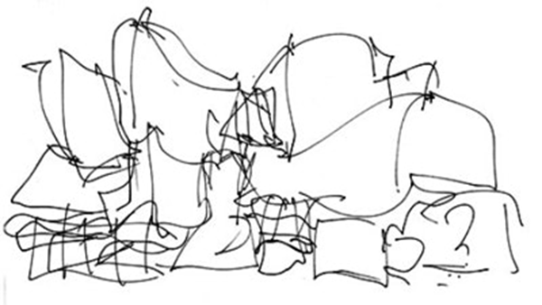
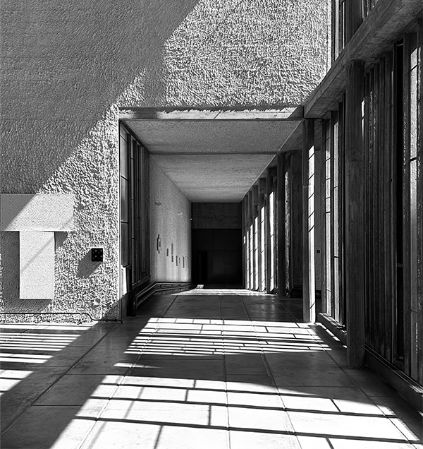
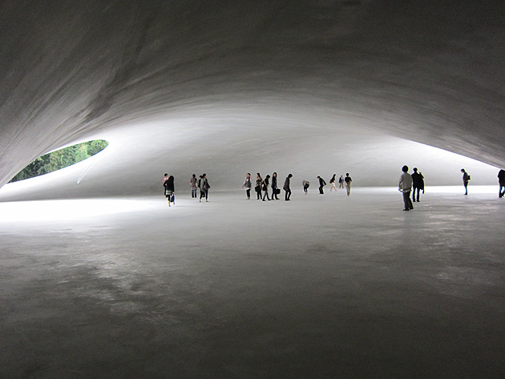
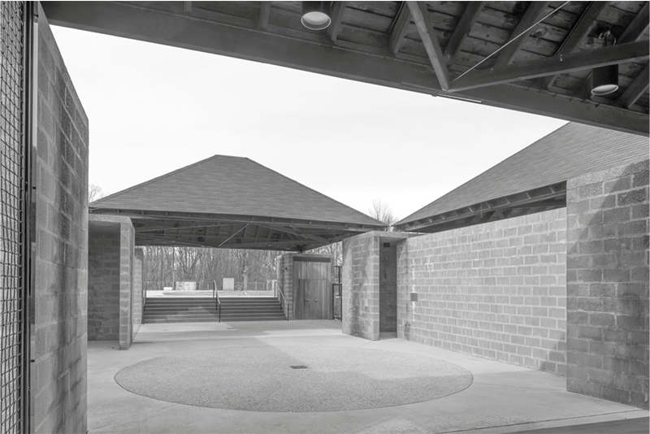
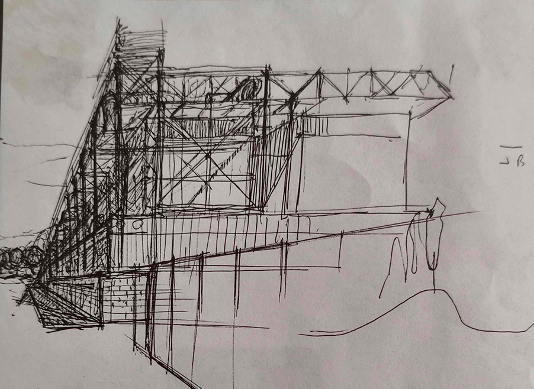

Ciclo di lezioni del Corso di Composizione architettonica I - A.A. 1992-93.
Facoltà di Architettura Valle Giulia - Università di Roma "La Sapienza".
Nota sull'origine e sulla natura di questa edizione
Le nove lezioni pubblicate nascono da materiali didattici originari di Sergio Petruccioli, successivamente riorganizzati in una redazione più coerente per finalità formative. L'impianto teorico resta integralmente dell'autore; l'intervento editoriale ha riguardato struttura, chiarezza e continuità argomentativa.
Leggi la nota completa
Nelle intenzioni dell'autore, quel materiale avrebbe dovuto costituire la base per una pubblicazione. Tuttavia, i tentativi avviati nel tempo non giunsero a compimento. Il testo, pur ricco di intuizioni e di struttura teorica, conservava i tratti tipici della lezione orale: ripetizioni, discontinuità, passaggi impliciti, talora frammentari. Era un materiale vivo, ma non ancora formalmente compiuto.
A distanza di vent'anni è emersa una nuova redazione del testo, meno lacunosa e più strutturata rispetto alla versione originaria, ma ancora non pienamente pronta per la pubblicazione in forma tradizionale. È in questa fase che si è deciso di intraprendere un lavoro di rielaborazione sistematica, con l'obiettivo di restituire coerenza logica, continuità argomentativa e maggiore esplicitazione teorica a un pensiero che era già chiaramente presente nella sostanza, ma non sempre completamente articolato nella forma.
In questo processo è stato utilizzato uno strumento di intelligenza artificiale. È importante chiarire la natura di tale intervento.
L'AI non ha introdotto contenuti estranei né ha modificato l'impostazione teorica delle lezioni. Il suo ruolo è stato quello di strumento redazionale avanzato: ha contribuito a ordinare, esplicitare, sviluppare passaggi concettuali impliciti, rafforzare nessi logici e continuità interne. Si è trattato, dunque, non di un'alterazione del pensiero, ma di un suo prolungamento concettuale e di una sua sistemazione strutturale, sempre guidata e controllata dall'editore del testo.
Il pensiero, l'impostazione disciplinare, l'orizzonte teorico restano integralmente riconducibili a Sergio. L'intervento successivo ha avuto lo scopo di rendere leggibile, coerente e didatticamente fruibile un materiale che nasceva in forma orale e che non aveva raggiunto una redazione definitiva.
Le schede di approfondimento che accompagnano le lezioni non sono testi dell'autore. Esse costituiscono integrazioni redatte successivamente, con finalità esclusivamente didattica. Sono state concepite per offrire esempi, riferimenti, ampliamenti e casi studio coerenti con il punto di vista teorico espresso nelle lezioni, ma non devono essere considerate parte del corpus originario.
La decisione di rendere pubbliche queste lezioni attraverso un canale libero e accessibile nasce da una finalità esplicitamente formativa. Esse vengono messe a disposizione di studenti e docenti come strumento di lavoro, di riflessione e di discussione. Non si presentano come un'edizione critica definitiva, né come un'opera conclusa, ma come un testo didattico strutturato, capace di offrire orientamento teorico e metodologico nel campo della composizione architettonica.
La pubblicazione intende dunque rispettare la natura del materiale originario, lezioni nate per l'aula, e al tempo stesso renderlo oggi fruibile in una forma più coerente e sistematica, senza tradirne l'impianto concettuale.





